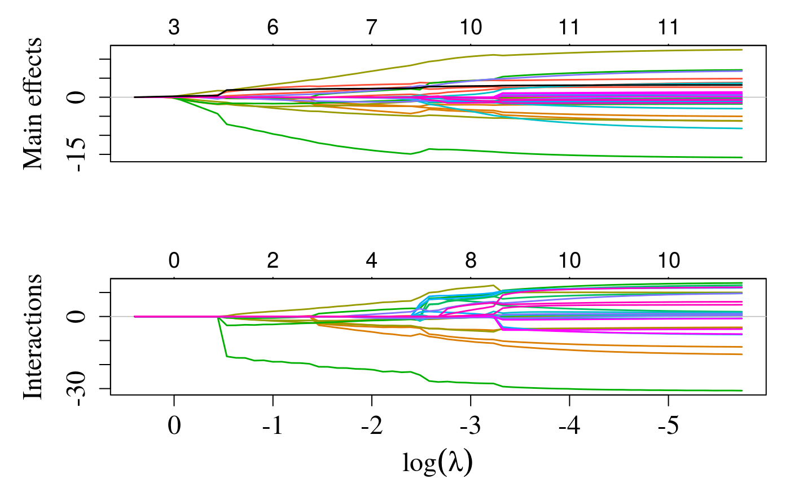

Produces a coefficient profile plot of the coefficient paths for
a fitted sail object. Both main effects and interactions (if
present) are plotted.
# S3 method for sail plot(x, type = c("both", "main", "interaction"), ...)
| x | fitted |
|---|---|
| type | which type of predictors should be plotted. |
| ... | other graphical paramters passed to |
A plot is produced and nothing is returned
A coefficient profile plot is produced
if(interactive()){ data("sailsim") f.basis <- function(i) splines::bs(i, degree = 3) fit <- sail(x = sailsim$x[,1:10,drop=F], y = sailsim$y, e = sailsim$e, basis = f.basis) plot(fit) }